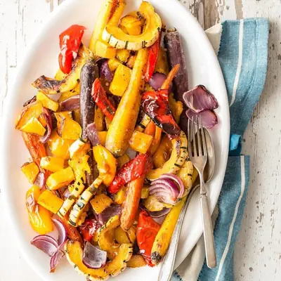

Maple Roast Vegetables

Ingredients
- 7 carrots, peeled, sliced in half lengthwise, then cut into 2-inch pieces
- 2 red bell peppers, cut into large chunks
- 1 delicata squash, unpeeled, split lengthwise, seeds removed and cut into half moons
- 1 yellow onion, cut into wedges
- 2 tablespoons oil
- 1 tablespoon kosher or sea salt
- 2 tablespoons maple syrup
Steps
- Preheat oven to 425°F.
- Place all the vegetables on a large baking sheet. Drizzle with olive oil and toss to coat all the vegetables and sprinkle with salt. Alternatively at this point you can place the vegetables in a large zipper bag and refrigerate overnight.
- Roast for 45-50 minutes, stirring halfway through, or until tender and golden.
- Remove the vegetables from the oven, drizzle with maple syrup and roast an additional 5 minutes or until caramelized and golden.
- Serve with additional salt to taste.
Recipe by Weelicious, from Weelicious. Saved here for personal use; the original has the full notes, tips and photos. Open original